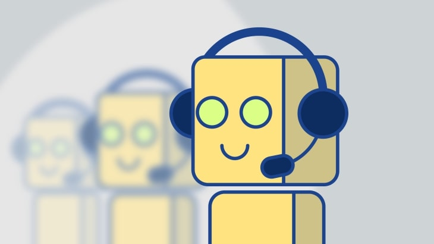

SHALINI SHEETAL
Bots are man-made reasoning frameworks that communicate with clients by means of informing, text, or discourse. They're being utilized on sites, just as on stages like Facebook Courier, WhatsApp, Slack, WeChat, and that's only the tip of the iceberg. They permit organizations to move correspondence with their clients or possible clients forward without human cooperation.
Like the endearingly firm robots we've seen in endless films – disastrous, miserable machines tormented by their agonizingly confined enthusiastic reach, uselessly expecting to achieve a more prominent level of humanity – chatbots frequently solid practically human, however not exactly. Their discourse is abnormal, the cadence some way or another off.
All things considered, a bot is just tantamount to its programming and client input permit it to be. Moreover, bots require preparing. Complete mechanization or simulated intelligence trade for client assistance isn't practical as of now. Nonetheless, we've taken jumps and limits in an extremely brief timeframe.
Although chatbot technology is unmistakably different from natural language processing technology, the previous can just truly progress as fast as the last mentioned; without continued developments in NLP, chatbots remain at the helpless at algorithms’ current ability to distinguish the unobtrusive subtleties in both written and spoken dialogue.
This is the place where most uses of NLP battle, and not simply chatbots. Any framework or application that depends upon a machine's capacity to parse human discourse is probably going to battle with the complexities characteristic in elements of speech such as metaphors and similes. Regardless of these significant restrictions, chatbots are getting progressively complex, responsive, and more natural.
Put another way, they’re becoming more human. One may wonder why chatbots are gaining popularity!
Portable informing applications like WhatsApp and Facebook Courier are colossal businesses. Individuals need to have the option to sign in from any place they are and chat with companions, family, and even brands they work together with. Mobile messaging applications are about something other than sending messages. The business has advanced and with falling information costs and less expensive costs for cell phones, the applications are accessible to a bigger base of clients than at any other time.
Around one billion individuals use Facebook Messenger!
Accordingly, having a chatbot introduced in this application on your organization's landing page is a decent choice one can consider. According to reports, it utilizes more than 100,000 bots for purposes like suggesting items, gathering data, preparing orders, and so on.
Numerous organizations in an assortment of enterprises are learning first-hand how bot innovation can change the manner in which they give client assistance. This innovation is being utilized to help with individual internet banking, booking travel facilities, overseeing protection claims, offering interior help, noting client assistance demands, and giving better psychological wellness access.
What's next for chatbots? Innovation around the chatbot business is developing at a fast rate. Bots are figuring out how to accomplish more things; spot designs better; and trigger precise reactions dependent on catchphrases, phrases, or different boosts.
Juniper Exploration discloses to us the normal time saved per chatbot in the banking and medical services areas, when contrasted with customary call habitats, is 4+ minutes. Think about the cash businesses will save from this! The normal cost saved per chatbot collaboration in banking is $0.70.
Voice interfaces like Amazon's Alexa are picking up footing with clients, and Google is attempting to make voice interfaces intuitive with wearable gadgets and cell phones.
Have you arrived on a site and seen a chat box spring up (for the most part in the lower right) asking you inquiries? Hope to see a greater amount of this. The details show us that bots are setting down deep roots, at any rate soon. The innovation is developing at a fast rate, bots are getting less expensive and simpler to utilize, and more businesses and brands are jumping ready.